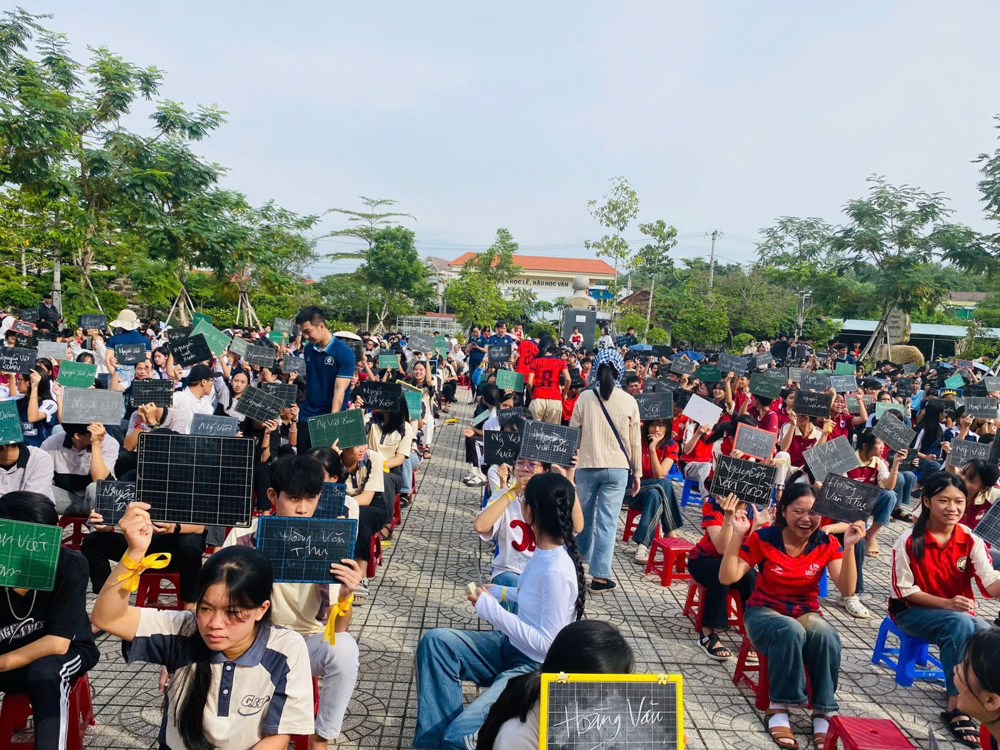

Sáng ngày 21 tháng 12 năm 2024, tại sân trường THPT Trần Phú, không khí tưng bừng, rộn ràng bao trùm khắp sân trường khi cuộc thi “Rung chuông vàng” chính thức diễn ra. Đây là hoạt động do Tổ Sử - Địa phối hợp với Đoàn trường tổ chức nhằm chào mừng 80 năm ngày thành lập Quân đội nhân dân Việt Nam (22/12/1944 – 22/12/2024) và 35 năm ngày Hội quốc phòng toàn dân..
Ngay từ sáng sớm, sân trường đã nhộn nhịp với sự có mặt của đông đảo thầy cô giáo, các em học sinh cùng ban tổ chức. Những thí sinh tham gia cuộc thi xuất hiện đầy tự tin với niềm háo hức, quyết tâm giành chiến thắng. “Rung chuông vàng” không chỉ là một cuộc thi kiến thức đơn thuần mà còn là dịp để các em học sinh tìm hiểu sâu hơn về lịch sử hào hùng của dân tộc, những chiến công vang dội của Quân đội nhân dân Việt Nam trong sự nghiệp đấu tranh giải phóng đất nước và bảo vệ Tổ quốc.
Với sự chuẩn bị kỹ lưỡng, chương trình diễn ra sôi động, hấp dẫn ngay từ những câu hỏi đầu tiên. Các thí sinh lần lượt vượt qua nhiều câu hỏi hóc búa về lịch sử, quốc phòng, quân sự, thể hiện sự am hiểu sâu sắc về chủ đề cuộc thi. Bên cạnh đó, sự tham gia cổ vũ nhiệt tình từ các bạn học sinh đã làm tăng thêm sự kịch tính, hồi hộp cho từng vòng thi.
Cuộc thi bao gồm nhiều vòng thi loại trực tiếp, đòi hỏi thí sinh không chỉ có kiến thức vững vàng mà còn phải có bản lĩnh và tư duy nhạy bén để đưa ra câu trả lời chính xác trong thời gian ngắn nhất. Những câu hỏi không chỉ xoay quanh lịch sử của Quân đội nhân dân Việt Nam, mà còn đề cập đến những sự kiện quan trọng, các nhân vật lịch sử, và tinh thần chiến đấu kiên cường của dân tộc qua từng thời kỳ.
Có những thời điểm, sân trường gần như nín thở khi chỉ còn lại một số ít thí sinh trụ lại đến những câu hỏi cuối cùng. Sự căng thẳng lên đến đỉnh điểm khi cuộc thi bước vào vòng thi quyết định – nơi chỉ một thí sinh xuất sắc nhất có thể rung được chuông vàng.
Sau nhiều vòng thi đầy cam go, vượt qua hàng loạt đối thủ mạnh, em Phan Hạnh Nhân (lớp 12A) đã xuất sắc giành giải nhất và vinh dự rung được chuông vàng. Chiến thắng này là thành quả xứng đáng cho sự nỗ lực, chuẩn bị kỹ lưỡng của em trong suốt thời gian qua.
Bên cạnh đó, hai em Nguyễn Ngọc Sang (lớp 12A) và Võ Duy Thành (lớp 11D) cũng đã thể hiện bản lĩnh và kiến thức vững vàng, đạt được thành tích ấn tượng và nhận giải thưởng từ Tổ Sử - Địa. Đây là phần thưởng động viên tinh thần, ghi nhận sự cố gắng của các em trong hành trình chinh phục đỉnh cao tri thức.
Không chỉ dừng lại ở một sân chơi trí tuệ, cuộc thi “Rung chuông vàng” còn mang ý nghĩa sâu sắc trong việc tuyên truyền, giáo dục truyền thống yêu nước, lòng tự hào dân tộc và trách nhiệm của thế hệ trẻ đối với lịch sử nước nhà. Thông qua cuộc thi, các em học sinh hiểu hơn về ý chí kiên cường, tinh thần tự lực, tự cường, vượt qua khó khăn, gian khổ của quân và dân ta trong sự nghiệp đấu tranh vì độc lập, tự do của dân tộc.
Bên cạnh đó, đây cũng là cơ hội để học sinh tôn vinh và tri ân những đóng góp to lớn của cán bộ, chiến sĩ Quân đội nhân dân Việt Nam – những người luôn sẵn sàng hy sinh để bảo vệ chủ quyền, an ninh đất nước.
Cuộc thi “Rung chuông vàng” năm nay đã khép lại trong niềm hân hoan và phấn khởi của tất cả thầy cô và học sinh nhà trường. Thành công của chương trình là động lực để THPT Trần Phú tiếp tục tổ chức nhiều hoạt động ý nghĩa hơn nữa, góp phần nâng cao hiểu biết lịch sử, bồi đắp tinh thần yêu nước và trách nhiệm của học sinh đối với quê hương, đất nước.